Table of contents
After logging in, you will be navigated to the DMS dashboard. DMS dashboard contains tools that can be used for many purposes. These all will be discussed in this manual.
Front office can scan NFC card directly to view the patient details from this screen. NFC card won't work on other screens.

Click on the icon on the top-right corner of the screen to view options related to the user account.
Clicking log out will sign you off from the session and redirect you to the log in page.
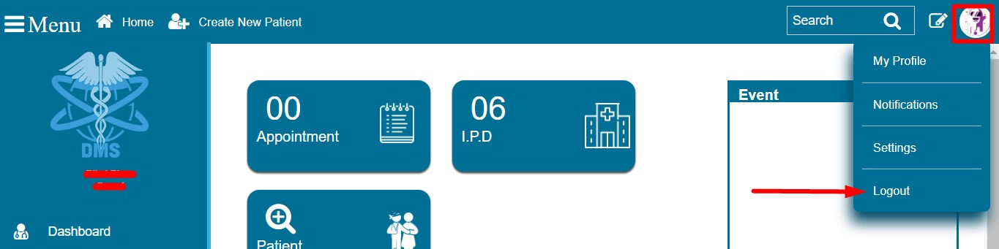
1.a Feedbacks
Feedbacks for improving DMS system, error reporting and additional comments can be sent. Press feedback icon on the top right corner next to the Search bar and fill up the form.
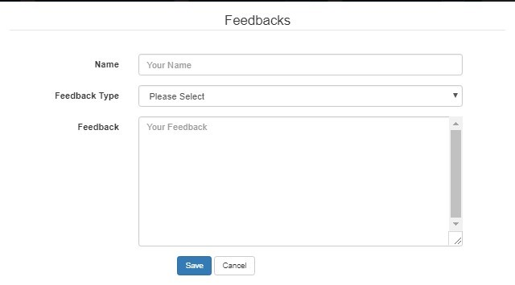Upcoming events and notices can be easily added to the dashboard. On the side bar scroll down, find Events and Notice. Click on them and fill up the form as required and post it on the dashboard.
NOTE: Every account holder can view this on their dashboard and could be super useful, so it should be properly utilized.
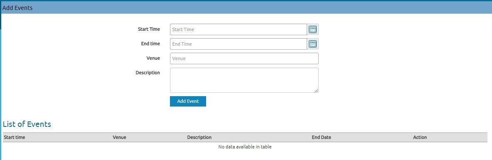

These messages will be posted for certain time only.From and To indicates start date and end date respectively of that message.
- Click on the Create New Patient button on the top left of the screen as shown in the image below. 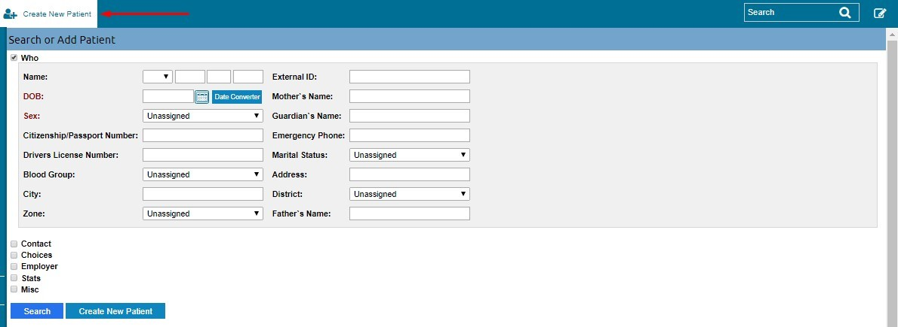
- Click on the checkbox as shown in the figure below to reveal its content and fill up the patient details and press Create New Patient on the bottom of the page. Note that entering the age of the patient will auto convert the patient's age. To use this facility simply type the age of the patient in the D.O.B section and focus-out(click somewhere else) to convert age into date in yyyy-mm-dd format as shown in the image below. 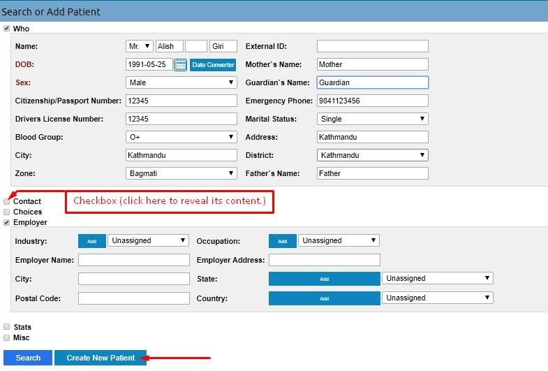
Here,
- Who section contains primary details and if any mandatory field is missed out then a message will be displayed, and missing fields will be marked red.
- Contact: This is the contact details of the patient.
- Choices: Patient's custom preferences. 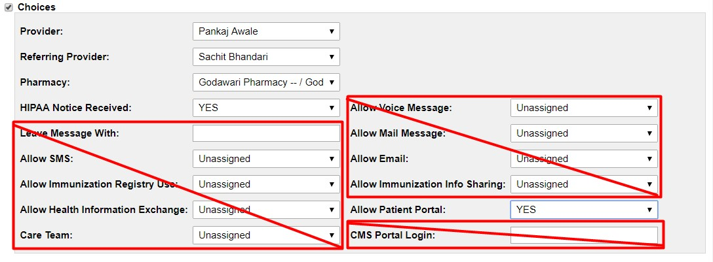
- Provider: This is the Doctor.
- Referring Provider: Provider referring to another provider.
- Pharmacy: Pharmacy that patient prefers.
- HIPAA Notice Received: The HIPAA Privacy Rule mandates that health care providers distribute a Notice of Privacy Practices to all patients. The Notice of Privacy Practices also describes the HIPAA defined patient rights related to use and disclosure of the individual's health information.
- Leave Message With: Not Applicable.
- Allow SMS: Not Applicable.
- Allow Immunization Registry Use: Not Applicable.
- Allow Health Information Exchange: Not Applicable.
- Care Team: Not Applicable.
- Allow Voice Message: Not Applicable.
- Allow Mail Message: Not Applicable.
- Allow Email: Not Applicable.
- Allow Immunization Info Sharing: Not Applicable.
- Allow Patient Portal: This option determines whether to give patient access to the patient portal or not. This configuration will appear on Patient Demographic page on top, next to the patient's name.
- CMS Portal Login: Not Applicable.
- Employer: Current employer of the patient. 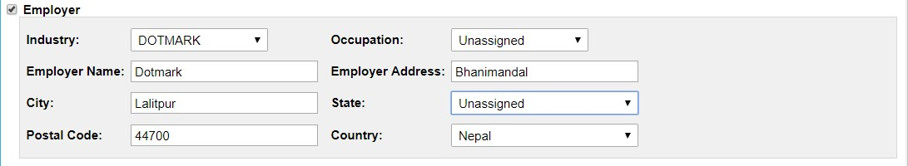
- Stats: Full background of the patient.
- Misc: Deceased status of the patient.


NOTE: Creating a new patient will first check if any existing patients matches the current detail of the patient, if non-item matches then click on Confirm Create New Patient.
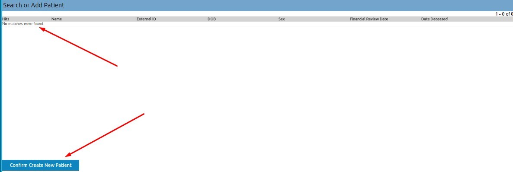- After creating new patient, you will be navigated to the Patient Demographics This page will contain all the personal information of the patient along with his/her appointments and medical reports (Future medical report of the newly created patient).
The following image illustrates how a patient portal can be configured and assigned. To allow Patient Portal access must be given from the Choices section which has been explained in Create New Patient section above.
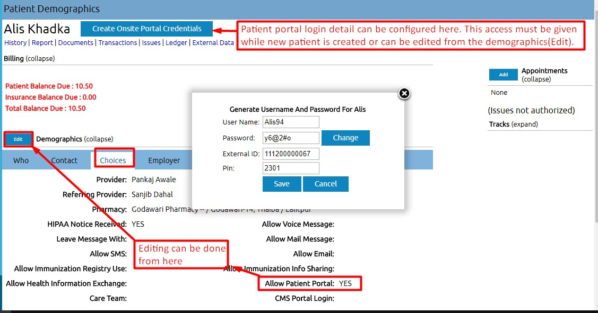- This page enlists all the necessary information regarding the patient. All the future test results, charges and editing of the records can be managed from here.
- This page will be updated frequently with every visit the record history will be published here by the doctors or other responsible members.
- Any notes for that patient can be attached by clicking the Notes link and following the instructions (Click on the Patient name to come back to the demographics page).
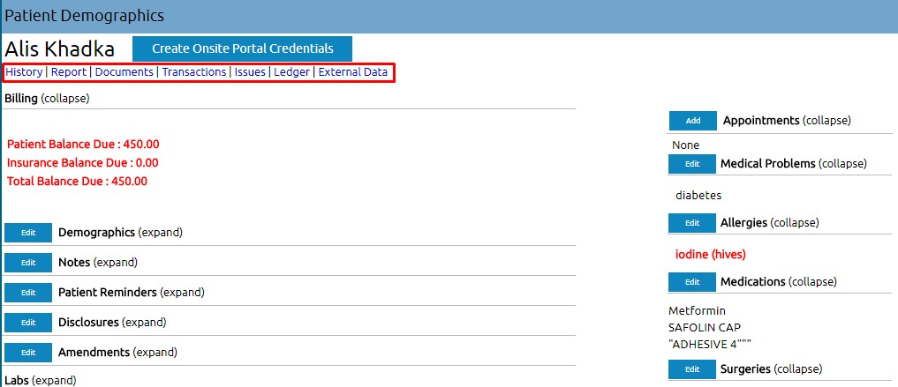
- The links below the name of the patient, as shown in the image below, gives further details of the patient.
- History: Click history tab to view the following page. This section contains general history of the patient, family's medical history, relative's medical history, lifestyle habits and other details. Click on the edit button to add or edit any of the contents.
- Report: CCR as shown in the image below exchanges most relevant and timely clinical information about a patient among providers, institutions, or others. This has to be completed upon referral or transfer or other transition of a patient from one caregiver to another. To be completed by Physicians, Nurses, Ancillary providers (e.g., social work, physical therapy, occupational therapy). CCD is an electronic document exchange standard for sharing patient summary information. Summaries include the most commonly needed pertinent information about current and past health status in a form that can be shared by all computer applications, including web browsers, electronic medical record (EMR) and electronic health record (EHR) software systems.
- Documents: Click Documents to upload images files of the test conducted like x-rays or a pdf file of some kind. Select a category and upload a files related to the subject to keep record of the active patient.
- Transactions:
- Issues:
- Ledger: Front office do not have access to this option.
- External Data:

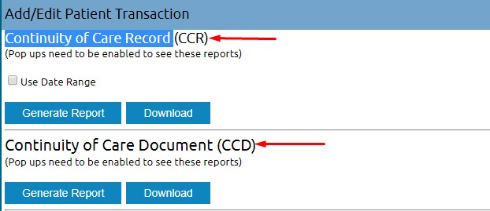
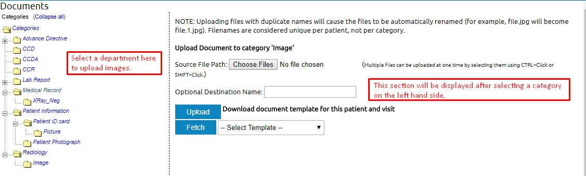

Patients search can be done from the search bar or the create new patient page as shown in the image below.
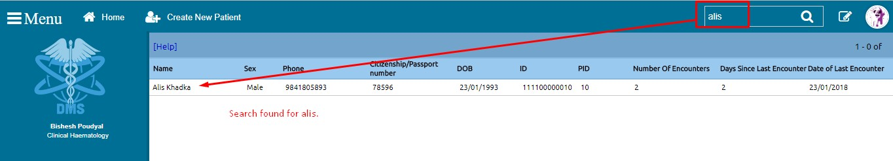
After selecting a patient, A button will appear at the top of the page called active patient. This will stay active until it is cleared using the Clear Active Patient button as shown in the image below.
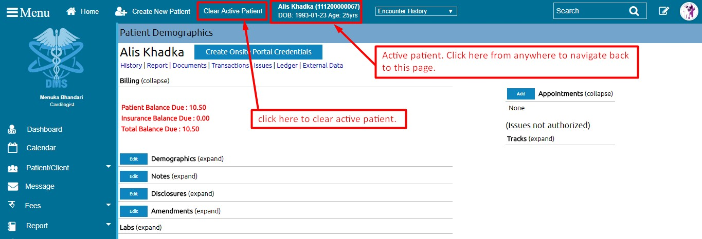4.a Encounters
Encounter history stores all the active patient visits in the past.
Note: Make sure to select a patient to make this section visible. This patient will be an active patient in the DMS system until the Clear Active Patient button is pressed.
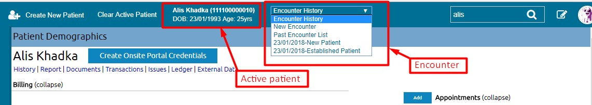
New Encounter will display the following form. This encounter will be created for the active patient i.e.Alis Khadka, as shown in the image below. Please fill in the details as required and save it for future reference.
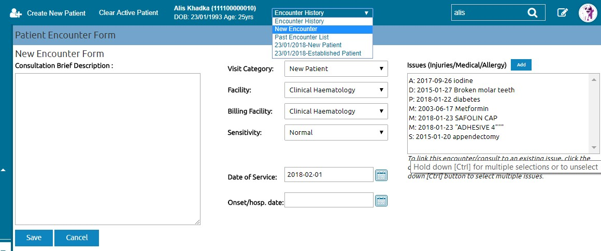
All the past encounters of the active patient will be displayed in this section. The following patient just have one encounter.
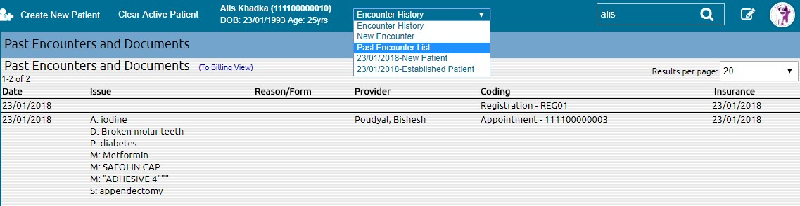
Active patient's encounter history will be displayed as a list in this dropdown as shown in the image below.
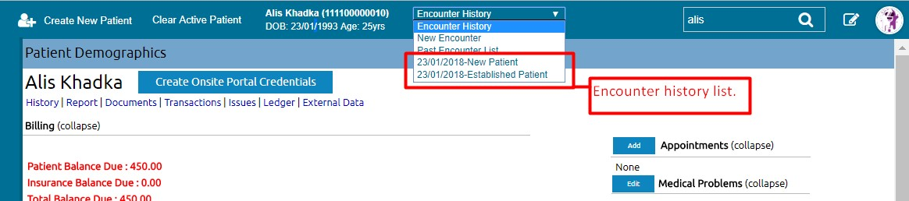
Click on the add button to create an appointment as shown in the image below.
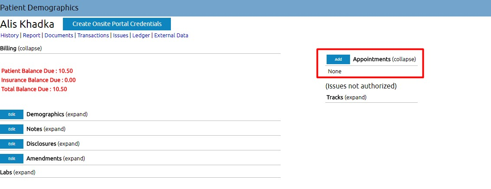
Fill up the form, find the available date and press save.
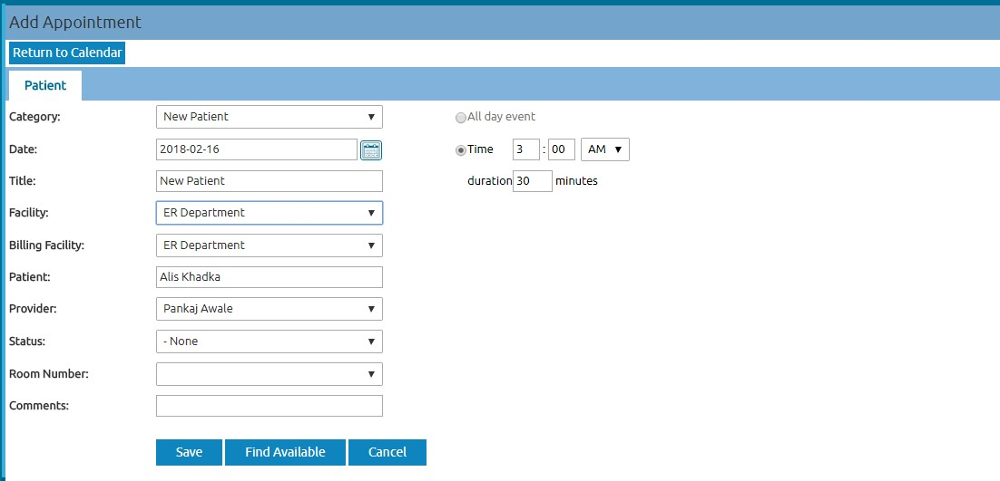
Dashboard shows list of options that you can choose from,
- Calendar: Select date and department (from the dropdown, below Providers) to view all the appointments of the Doctors. You can also create appointments by clicking on the time displayed as shown in the image below. On clicking on time, it will navigate user to the create new appointment page.
- Quick Order: Fill up the form as shown in the image below. Select required test (Eg: Laboratory or Radiology) from the list, search the test code and press Save. This will create procedure order for that patient with the selected provider.
- Doctor: This will list all the Doctors with their availability status. Select date to view list of Doctors for that date with their on-duty status.
- Patient: It shows list of all patients.
- Resources: The Available resources are shown in Resource Availability table. You can add reservation if you want to reserve any wards.
- Department: This will list all the different departments in the hospital along with number of doctors and nurses present in them.
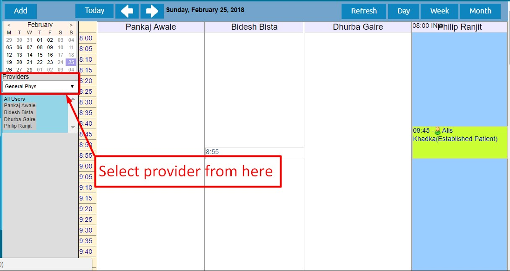
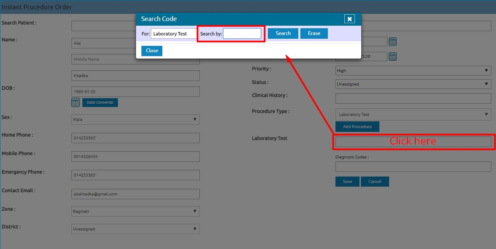
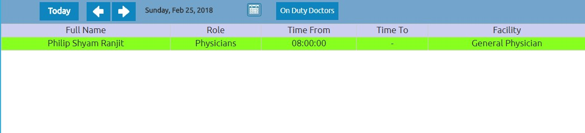
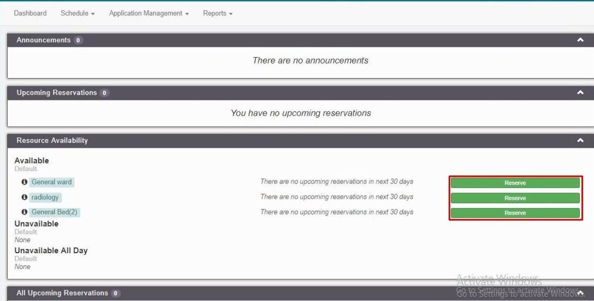
Fill in the necessary fields to add a reservation.
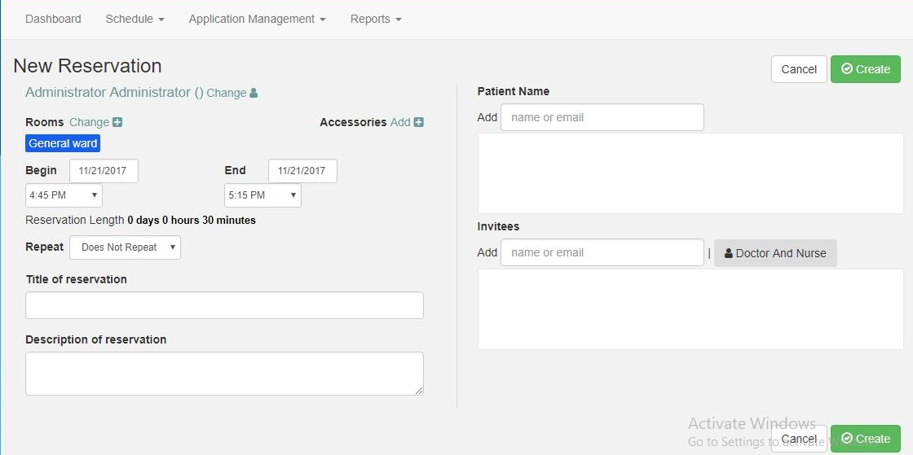
The reservations are displayed on the Resource Availability, in the Resource section.
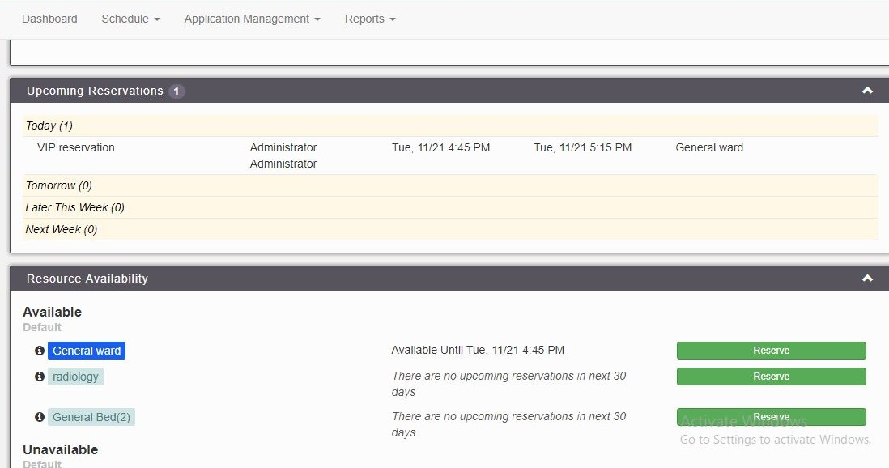
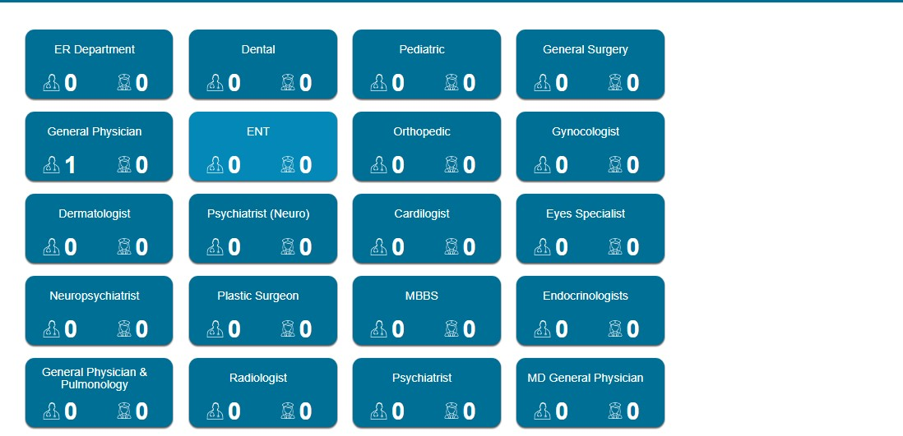
This section is described in the dashboard section above.
Patient: This shows the list of all patients.
New/Search: Create a new patient or search existing patient as described in the General section above.
Summary: This will be visible once a patient is selected. Summary will display the patient's demographic page which has been explained above.
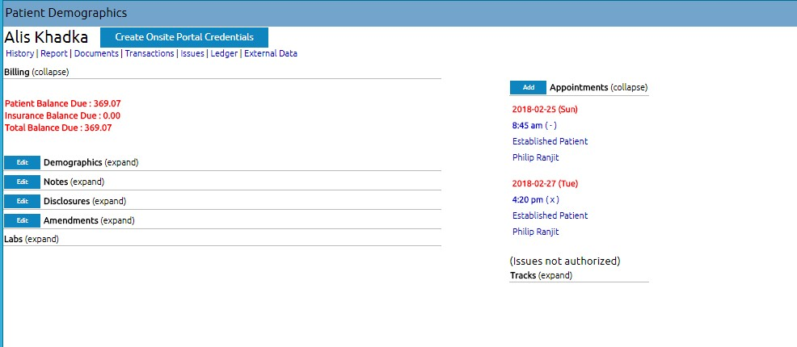
Records: Patient Record Request will simple record the request of the patient.
Patient Education: Search any information on the web from here.
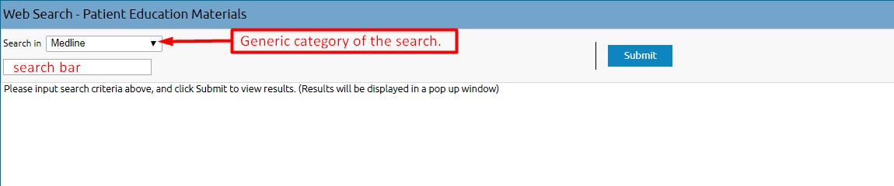Chart Tracker: Track patients with this function. Enter the Patient ID to view the information.
History of sent messages will be displayed here with details like from, patient, type, date and status. Click Add New to create message and send it to the respective patient.
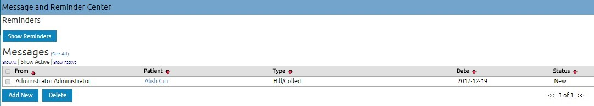
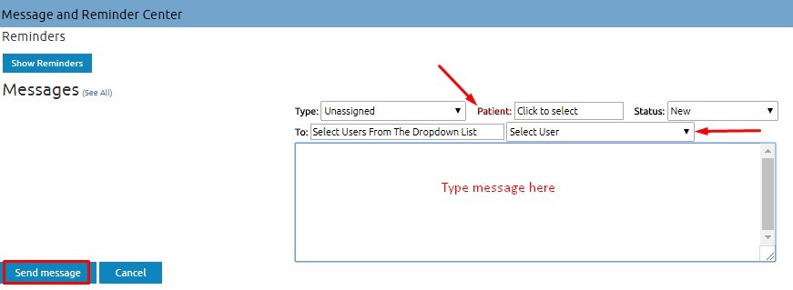
Note: Payment, Invoice, Refund and Checkout will only be visible when there is an Active Patient running in the system. In other words, user must select a patient to deal with the payments related role.
Payment:
- Payment can only be used for IPD patients.
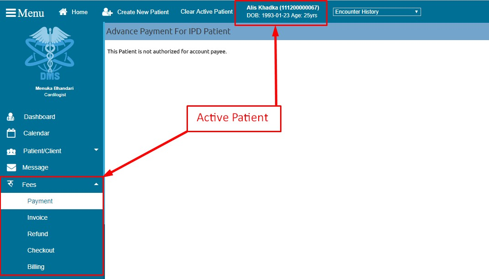
Invoice:
- Invoice stores all the payment history of a patient. Payment is done through the checkout section below.
- Invoice can be reprinted from here.
- Invoice id is used in the refund.


Refund:
- Enter the required invoice id and click Submit. The following screen will be displayed.
- Click on the check box on the column Check, fill up Return Qty (Return Quantity) and Return Amount.
- Press Refund to proceed with the process. Please note that refund requires authorization from managers or supervisors.


Checkout:
- It keeps record of all the unpaid bills of the patient selected.
- The encounter option shows all the patient's visits and the amount that had/has been charged during the encounter. Please select an encounter and press Pay to proceed with the payment.
- Also note that patient's PAN or VAT can also be submitted with payment process.
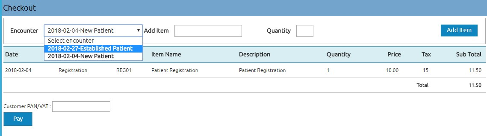
- In addition, any additional item/items used by the patient can be added through the Add Item button as shown in the figure below.
- To remove an item, click on it and press delete. User can also update the item.
- To update, change the item and quantity and press Update Item.

- Notice the tax difference. In case of tax difference payment has to be done seperatly.
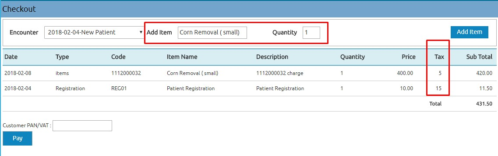
- The screen below will be displayed after pressing Pay button.
- Click on an item to proceed with the payment.

- You can add notes to the payment. Make it private or public as situation demands.
- Give discounts if any. Discounts can be given in Rupees or in Percentage. Select one from the dropdown and enter allowed amount or value.
- Press save to proceed with the payment.

Note: Please make note of the invoice id. Invoice id will be used if patient requests a refund.

Billing:
============================================Audit Trial
This is the activity log. All the information regarding invoices, refunds and changes in any price can be found here.
Activity can be viewed by selecting a date range, user and type of module. Press Submit to view the activity logs.
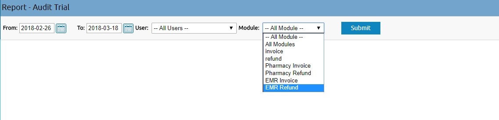
The logs can be printed as well as export in an Excel format.
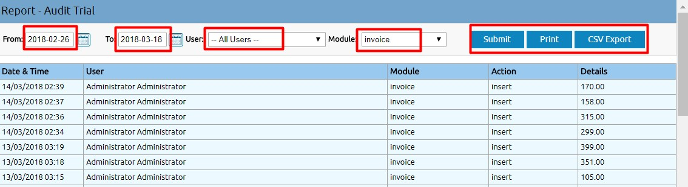
Billing
EHS Billing
Cash Register:
- Cash register contains records of cash history of the logged in user.
- The Type option will show three options, initial amount, closing amount and collection.
- Initial amount is the amount that the counter contains at the user arrival time. As soon as a user starts his/her shift the amount in the till should in entered using this option.
- Click on submit and enter your username and password. Please note that any user can log in and enter any type with any amount
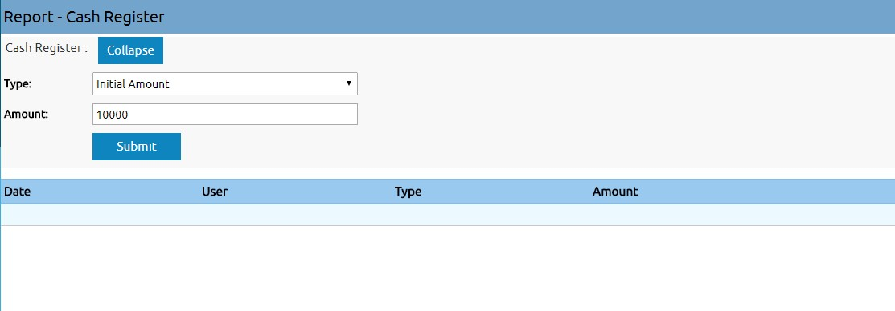
- After submitting the data and entering the username and password, the following screen will be displayed.
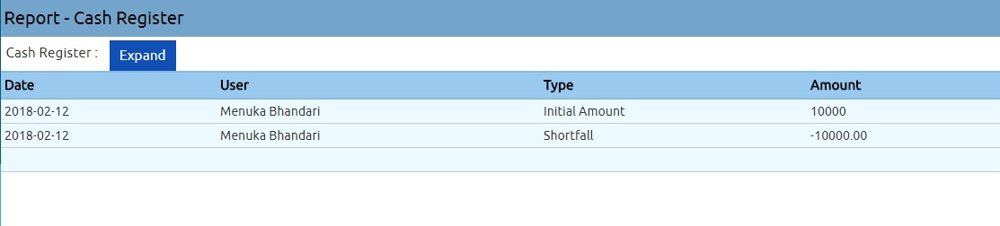
- Now if a manager, supervisor or a person in charge comes to collect money off the till then the Collection option type should be selected to enter the amount.
- In this case, the collection is taken while Menuka is logged in so, this cash collection will be stored in Menuka's account as shown in the image below.
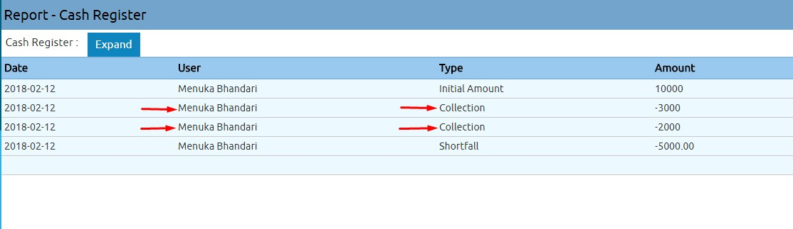
NOTE: While entering username and password any user can enter his/her log in information. However, the Amount and its Type record will be stored in the logged in user, Menuka in this case as shown in the image below.
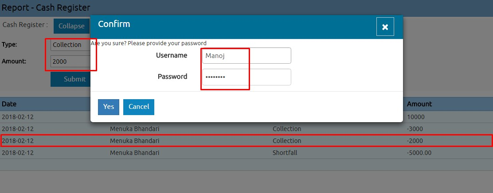
- The Closing Amount is the remaining amount in the till at the end of an user shift.
Pharmacy Billing
Cash Register:
This is the same as in EHS Billing. Please refer to that above.
Sales Book:
This shows all the invoices that are dealt with in the provided time frame.
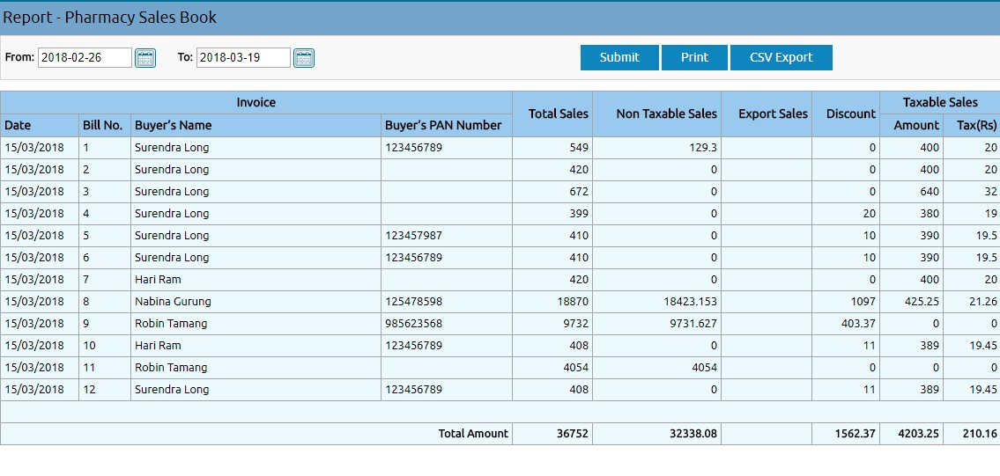
Sales Refund:
This shows all the refunds that are given in the provided time frame.
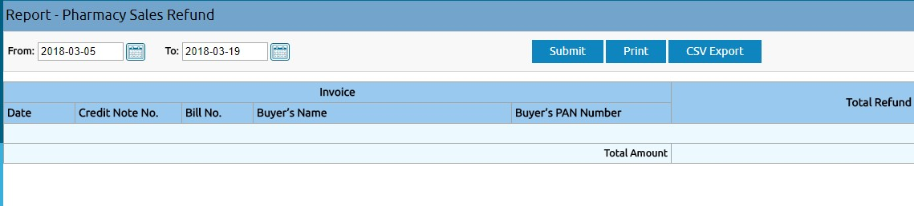
Please refer to the Cash Register section on the EHS billing.
Configuration:
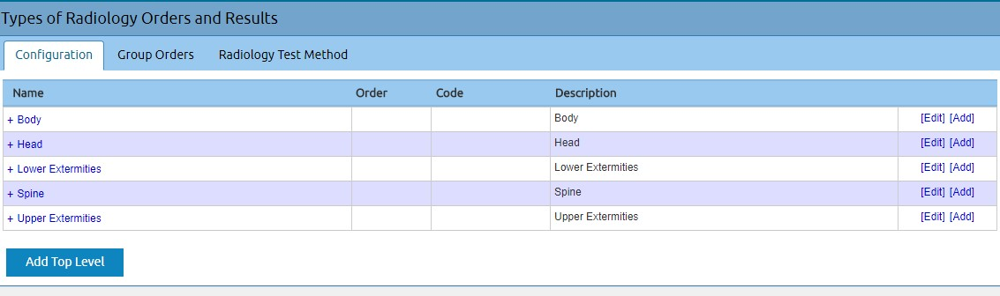
- Configuration controls all the tests that the Hospital conducts internally or externally.
- These tests can be categorized into groups, radiology order or other as required. Different topics will have different forms and their contents.
- Press Add Top Level to add new test as shown in the image below.
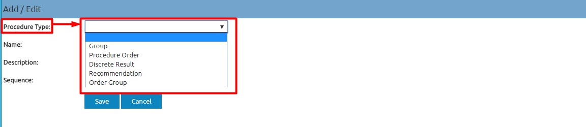
Selecting Group shows the following form. Enter details and press save.
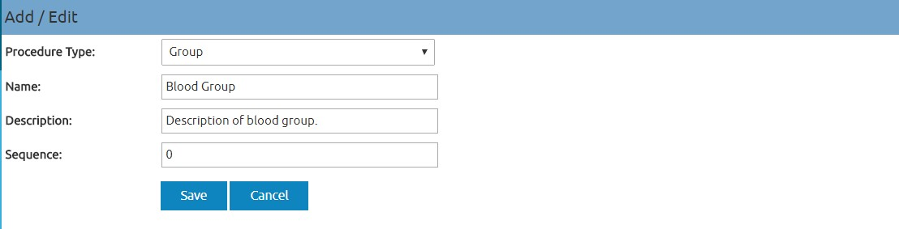
Selecting Radiology order from the list shown above shows the following form. Fill the form to add related item.
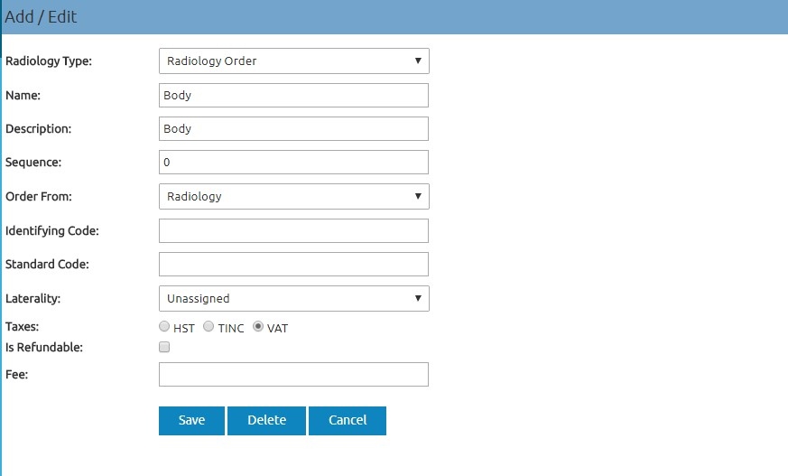
This will save the file in the Configuration page. You can also edit this group or add different tests in this group using the Add button.
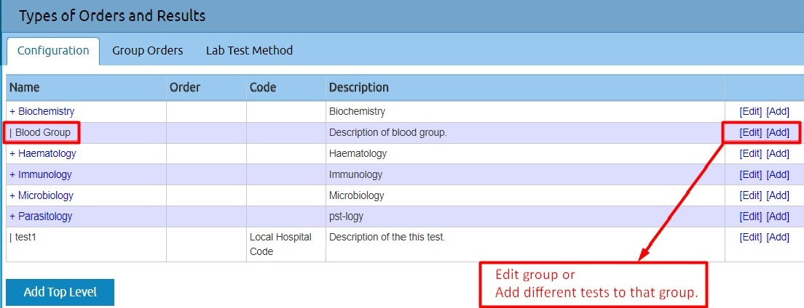
This topic is described in General section 1b.
This topic is described in General section 1b.
Password: Change your password here.
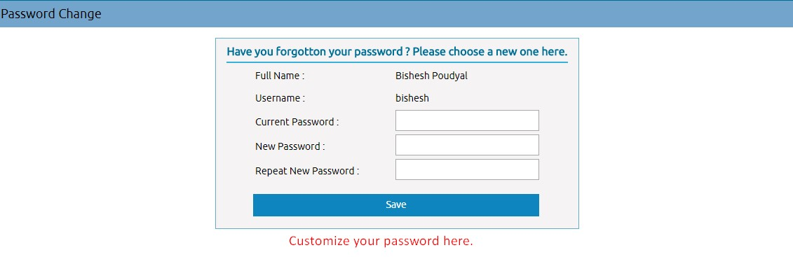
Authorizations:
Address Book: Most of the details of different departments in the hospital will be stored here.
Office Notes: Any users can add notes here. These notes will be stored here, and anyone can come here and view these notes.
Configure Tracks: Doctors update this section to keep records of varieties of tests like blood pressure test in different timings, its normal state for person of certain type and other in-depth details for other members to view. These records will be stored in the encounter history. Accessing this information from the Encounters, graph of that record will be displayed. This graph also can be printed if required.
Provides information about DMS.